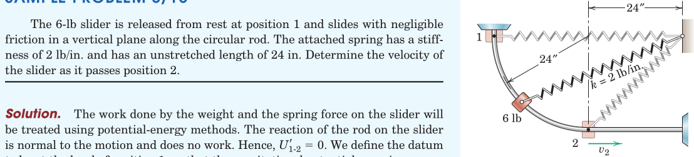
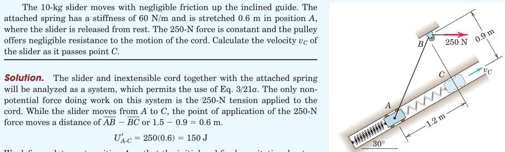
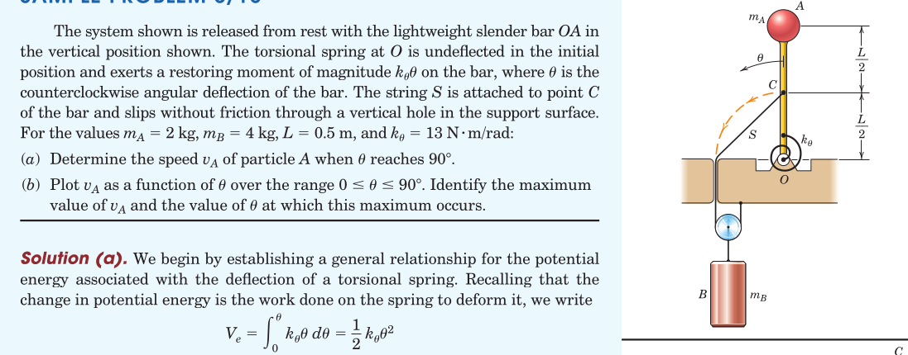
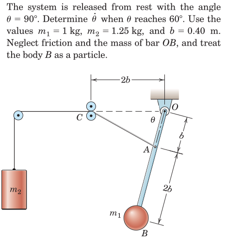
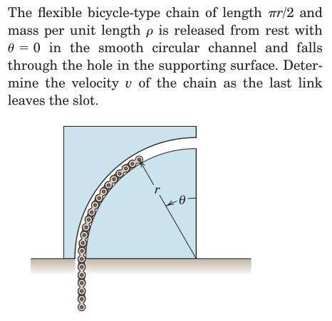
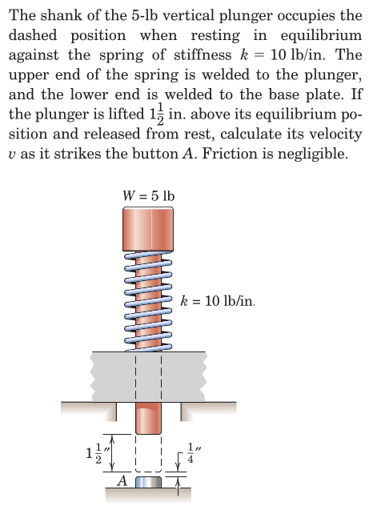
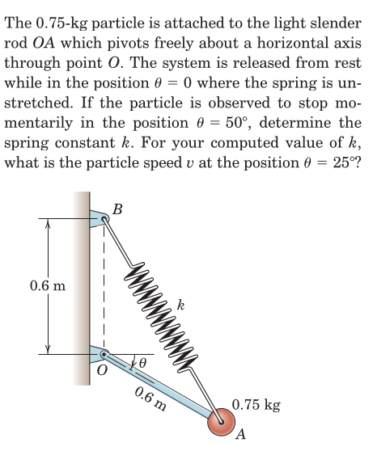
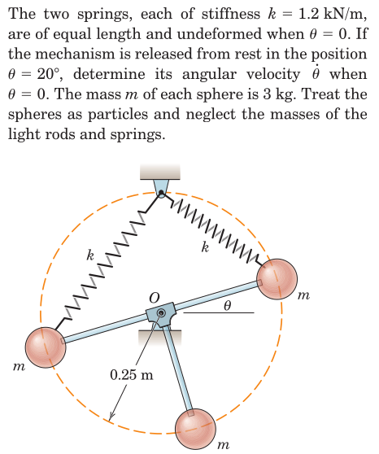
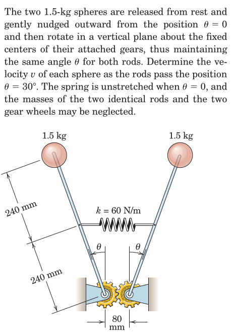
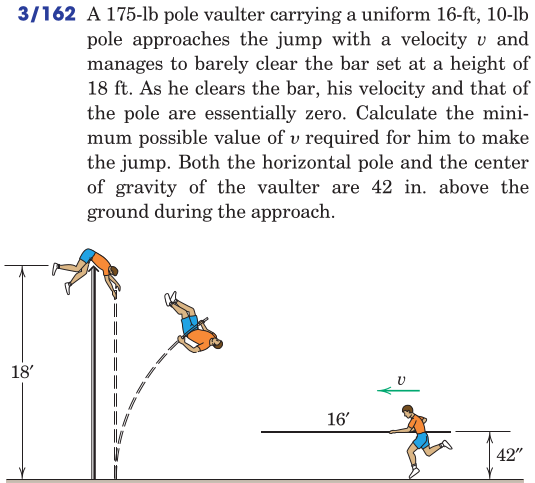

kinetics of masses/potential energy
Particle Kinetics
2025-11-05
Table of Contents
1. Potential Functions
- they can be defined as the negative of the work, based only on the initial and final coordinates of the mass, independent of the motion path
- due to spring forces
- due to gravitational attraction
1.1. Gravitational Potential
- is a function of the location \(h\) along the axis of gravitational acceleration \[ V^g = mgh \]
- The change in potential energy in moving a mass \(m\) from \(h_1\) to \(h_2\) \[ \begin{aligned} \Delta V^g &= V^g_2 - V^g_1\\ &= mg (h_2 - h_1) = mg \Delta h \end{aligned} \] is negative of the work done by the gravitational force on the mass.
1.2. Elastic Potential
- is a function of the spring’s elastic displacement \(x\) from its’ undeformed configuration \[ V^e = \int_0^x kx\,dx = \frac{1}{2} k x^2 \]
- The change in elastic energy in moving a mass \(m\) relatice to the undeformed length from \(x_1\) to \(x_2\) \[ \begin{aligned} \Delta V^e &= V^e_2 - V^e_1\\ &= \frac{1}{2} k (x_2^2 - x_1^2) \end{aligned} \] is negative of the work done by the spring force on the mass.
1.3. Modified Work-Energy Equation
- The work term \(U\) in \[ U_{1-2} = T_2 - T_1 = \Delta T \] is modified to \(U'\) as \[ U'_{1-2} = \Delta T + \Delta V \] where \(\Delta V = \Delta V^g + \Delta V^e\) is the sum of potentials from gravity and all springs attached while \(U'\) stands for the work of all external forces other than gravity and spring forces.
- This equation can also be stated as \[ T_1 + V_1 + U'_{1-2} = T_2 + V_2 \]
2. Conservative Force Fields

- A force is said to be conservative if the work done by it depends only on the initial and final coordinates (i.e. the work is path-independent).
- In this case, we assume (know) that a scalar force potential \(V=V(x,y,z)\) exists, such that the negative of its differential \(dV\) is equal to \(\boldsymbol{F}\cdot d\boldsymbol{r}\).
- In this way, we conjecture that \[ U_{1-2} = \int_{V_1}^{V_2} -dV = -(V_2 - V_1) \]
- The differential \(dV\) can be evaluated by using the chain-rule of differentiation as \[ dV = \frac{\partial V}{\partial x} dx + \frac{\partial V}{\partial y} dy + \frac{\partial V}{\partial z} dz \]
But \(dV\) is also equivalent to \[ F_x dx + F_y dy + F_z dz \] which implies that \[ F_x = \frac{\partial V}{\partial x},\hspace{1em} F_y = \frac{\partial V}{\partial y},\hspace{1em} F_z = \frac{\partial V}{\partial z} \]
In vector form the relation between the force, \(\boldsymbol{F}\) and the force potential \(V\) can be expressed as \[ \boldsymbol{F} = - \nabla V \] where the symbol \(\nabla\) (reads “nabla”) is the vector gradient operator defines as \[ \nabla = \frac{\partial}{\partial x} \boldsymbol{i} + \frac{\partial}{\partial y} \boldsymbol{j} + \frac{\partial}{\partial z} \boldsymbol{k} \]
3. Examples











4. Review
From Hibbeler, Engineering Mechanics: Dynamics: Chapter 14: 48, 49, 53, 58, 71, 72, 76, 78, 84, 92, 93